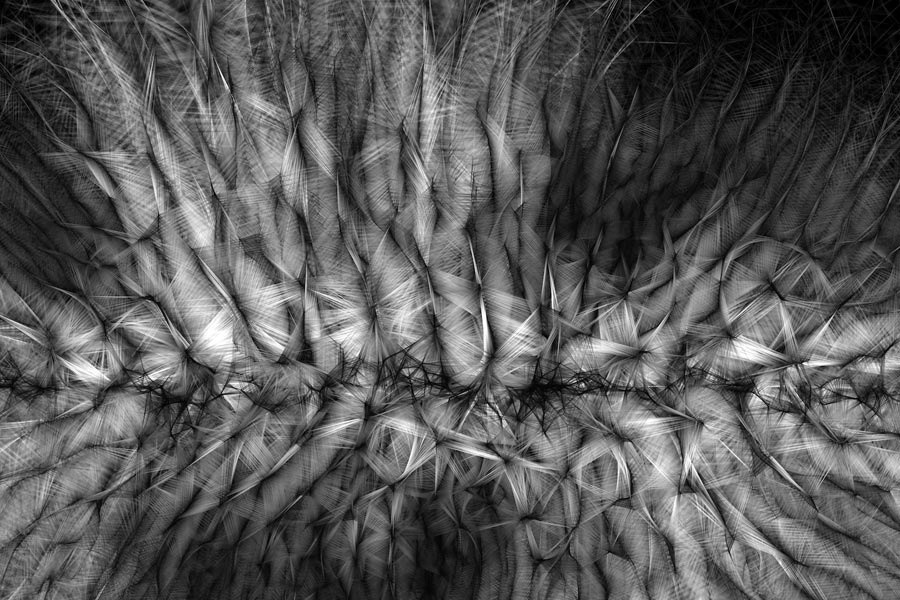

El código como sistema visual
El enfoque de Casey Reas se basa en la creación de instrucciones que definen comportamientos visuales. En lugar de diseñar una imagen de forma directa, desarrolla algoritmos que determinan cómo los elementos se relacionan, se mueven y evolucionan en el tiempo. Este método convierte al código en el núcleo del proceso creativo.
A partir de reglas simples, sus sistemas pueden generar resultados complejos e impredecibles. Esta lógica permite explorar la emergencia, donde patrones y formas surgen de la interacción entre componentes. El resultado es una obra que no está completamente controlada, sino que se desarrolla dentro de un marco definido.
Obras y conceptos clave
- Software Structures
- Process
- Generative Systems
- Emergencia
- Arte basado en reglas
- Visualización algorítmica
